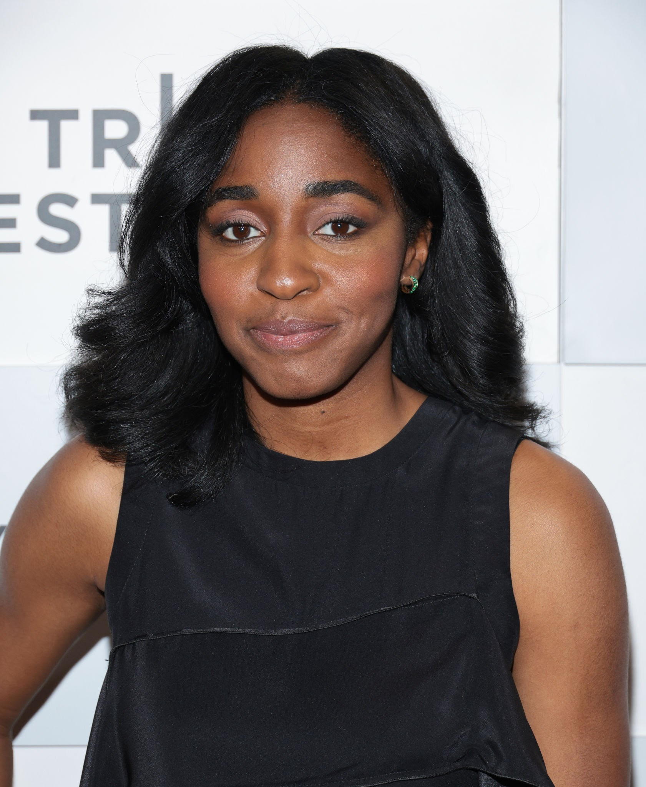

Ayo Edebiri
Sydney Adamu
Ayo Edebiri is an American comedian, writer, producer, actress, and voice actress. She appeared on Comedy Central's Up Next and co-hosts the podcast Iconography with Olivia Craighead. Edebiri is best known for voicing Missy on Big Mouth, and for her roles in The Bear and Abbott Elementary.